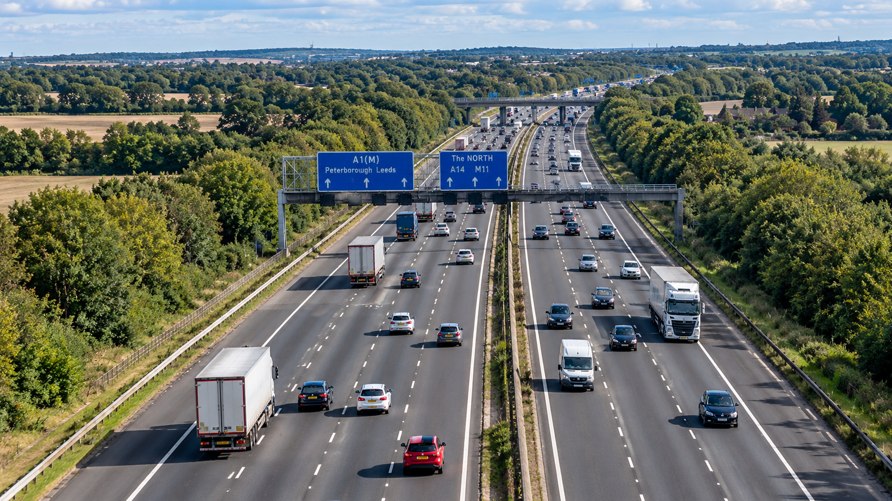
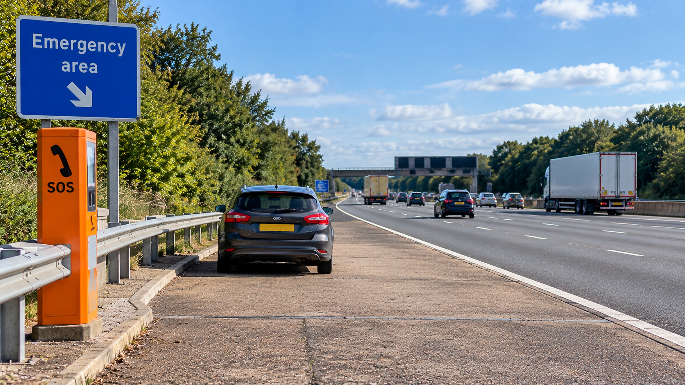

A car problem can develop with little warning, whether you are close to home or part-way through a long journey. With billions of vehicle miles travelled on Britain's roads each year, knowing what to do when something goes wrong is useful for every driver.
In 2025, motor vehicles travelled an estimated 342.6 billion miles on Great Britain's roads. Cars and taxis accounted for 262.4 billion vehicle miles, while motorways carried 71.9 billion vehicle miles.
Road condition is only one possible cause of trouble, but it gives an indication of the scale of roadside problems. RAC patrols recorded 26,048 pothole-related breakdowns during 2025, involving faults such as damaged shock absorbers, broken suspension springs and distorted wheels. That equates to an average of around 71 incidents per day and was 15% higher than in 2024.
These RAC figures relate specifically to pothole-related incidents attended by its patrols. They are not a national total for all vehicle breakdowns.
UK ROADS IN NUMBERS
Traffic figures are Department for Transport estimates for Great Britain. Breakdown figures are RAC patrol data relating specifically to pothole-related faults and should not be interpreted as the total number of breakdowns nationally.
Statistics provide context, but when your own car develops a problem, the immediate question is much simpler: what should you do next?
The answer depends heavily on where you have stopped. A problem on your driveway or in a car park is very different from one that leaves you on a motorway or another high-speed road.
Your first priority is not the car. It is getting yourself and your passengers into the safest position reasonably possible.
If Your Vehicle Develops a Problem While You Are Driving
If you notice a warning light, loss of power, unusual noise, overheating or another problem while the car is still moving, avoid stopping suddenly in a dangerous position if you can safely reach somewhere more suitable.
The Highway Code uses the term "place of relative safety" for a location where the risk to you, your passengers and the vehicle from passing traffic is reduced.
On a motorway or another high-speed road, a service area is the safest place to stop if you can reach one. Other possible locations include lay-bys, emergency areas and hard shoulders, although a hard shoulder provides less protection because of its proximity to high-speed traffic.
Once you have reached a safer position, you can assess what help is required.
Broken Down on an Ordinary Road?
If possible, get the car off the road and away from passing traffic. If it is causing an obstruction, use the hazard warning lights to alert other road users.
Visibility matters too. The Highway Code advises wearing light-coloured or fluorescent clothing during daylight where available, and reflective clothing at night or in poor visibility.
On an ordinary road, and only when it is safe to do so, a warning triangle can be placed on the same side of the road at least 45 metres (147 feet) behind the broken-down vehicle.
Take particular care when placing or retrieving it.
Avoid standing in a position where approaching traffic could put you at risk. Once everyone is somewhere safe, assistance or recovery can be arranged.

What If You Break Down on a Motorway?
A motorway breakdown requires particular care because of the speed and proximity of traffic.
If the car develops a problem but can still be driven safely, the Highway Code advises leaving the motorway at the next exit or pulling into a service area if possible.
If that is not possible, move into the left lane and try to reach an emergency area or hard shoulder. Stop as far to the left as possible, leave enough room to exit the vehicle and turn the wheels to the left.
Switch on the hazard warning lights. If it is dark or visibility is poor, use the sidelights as well.
If it is safe and possible to leave the vehicle, occupants should exit on the side furthest from traffic. Where there is a safety barrier, move behind it while remaining alert to hazards such as uneven ground, debris or sudden drops.
Once you are safely away from the carriageway, do not return to the car simply because it is raining, cold or dark.
What If Your Vehicle Stops in a Live Motorway Lane?
This situation is different.
If you cannot get into the left lane or another safer location, and you cannot safely get out and well away from traffic, the Highway Code says to:
- stay in the vehicle;
- keep your seat belt on;
- switch on the hazard warning lights; and
- call 999 immediately and ask for the police.
If the vehicle has an SOS function, this may also be used to request police assistance.
This is why advice simply telling motorists to "always get out of the car" can be misleading. What you should do depends on whether you can safely reach a location away from moving traffic.

What Is a Motorway Emergency Area?
Emergency areas provide somewhere to stop in an emergency on certain motorways. They are commonly identified by blue signs featuring an orange SOS telephone symbol and may also have orange road surfacing.
They are for emergency use.
There is an important point to remember if you have stopped in one. When you are ready to rejoin the motorway, the Highway Code says you must use the emergency telephone and follow the operator's advice.
A traffic lane may need to be closed temporarily to allow you to leave safely.
How Do You Explain Where You Have Broken Down?
Knowing your location can make getting help much easier.
On motorways and other high-speed roads, useful ways of identifying your position can include:
- a mapping application on your phone;
- marker posts or driver-location signs; and
- the vehicle's eCall or SOS system, where fitted.
Your direction of travel can also be important. Saying that you are on a particular road without knowing which direction you were travelling may make your position harder to identify.
When arranging recovery, explain what has happened as clearly as you can. Useful information can include the vehicle make and model, whether it starts, drives, rolls or steers, and whether there is visible damage or another problem that may affect loading.
Should You Try to Repair the Car Yourself?
Location makes a major difference.
Looking at a minor problem while a car is safely parked on a driveway is very different from attempting a repair beside fast-moving traffic.
In the motorway breakdown circumstances covered by Highway Code Rule 277, drivers are specifically told not to attempt repairs while waiting for help.
Even away from a motorway, do not put yourself underneath, behind or alongside a car where passing traffic, poor visibility or the position of the vehicle could put you in danger.
Getting the car moving is never more important than staying safe.
When Does a Vehicle Need Recovery?
Not every fault can — or should — be repaired where it occurs.
Depending on the problem and location, the vehicle may need to be recovered to a garage, repair centre, home address or another suitable destination.
Once you are somewhere safe, you can contact ResQ Direct to discuss the recovery.
Tell us where the vehicle is, what has happened and where it needs to go. If it is damaged or non-running, information about its condition and anything unusual about access can help us understand what is required before collection.
ResQ Direct provides vehicle recovery in Peterborough, Cambridgeshire and surrounding areas, with planned vehicle transport available for longer journeys across England, Scotland and Wales.
THE SIMPLE ORDER TO REMEMBER
Get somewhere safer → protect yourself and your passengers → get help → deal with the vehicle.
The vehicle can be dealt with afterwards. Your safety comes first.
SOURCES & FURTHER INFORMATION
Official guidance & supporting information
Department for Transport
Road Traffic Estimates in Great Britain: 2025. Official Department for Transport statistics used for the 2025 traffic figures in this guide.
View Department for Transport statistics →GOV.UK / The Highway Code
Breakdowns and incidents — Rules 275–287. Primary source for the breakdown and motorway safety guidance in this article.
View Highway Code guidance →GOV.UK / The Highway Code
Motorways — Rules 253–273. Additional official guidance concerning motorway driving and emergency areas.
View motorway guidance →RAC
Pothole-related breakdown data for 2025. Source for the RAC patrol figures relating to pothole-related breakdowns.
View RAC data →Contains public sector information licensed under the Open Government Licence v3.0.